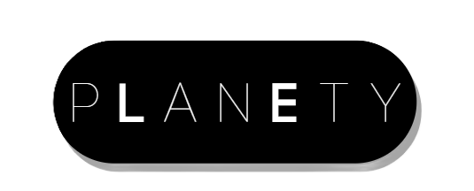

Not connected
Logout
Live Readings
Temperature
--
°C
Light
--
lx
Soil Moisture
--
%
Humidity
--
%
7 Day Trend
Save Suggestion
Download PDF
Suggestions
Saved Suggestions
Saved days:
0
Clear
Suggestions for today
No suggestions yet.
Latest Tips
No tips yet.
PLANETY AI
Chat input
Send
Settings
All data is stored locally on your device.
Bluetooth: Disconnected
Connect Bluetooth
Connect Serial
Toggle to connect or disconnect your Planty device via Bluetooth. This uses Web Bluetooth and works best in Chrome/Edge on desktop.
Tip: select the ESP32 advertisement (e.g. "ESP32-Planty") or the service UUID
fd418ddc-13e2-4fd1-8c29-dc51a06994c6
in the browser pairing dialog.
Reset App (Local Data)